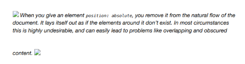
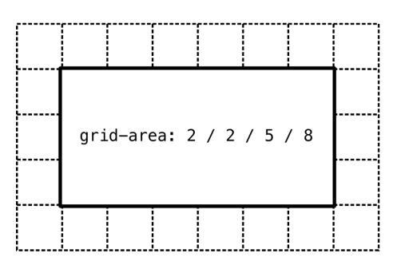
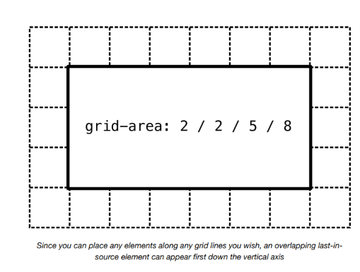
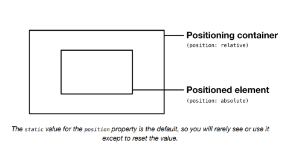
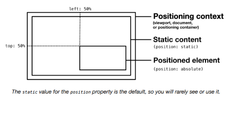
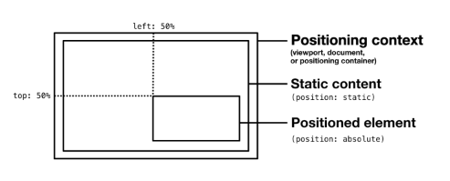
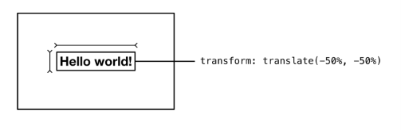
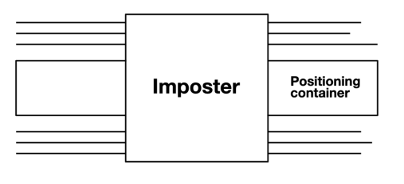
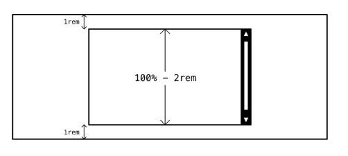
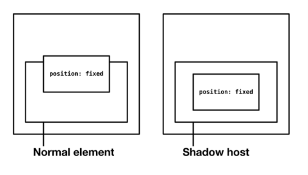

The Imposter¶
El problema¶
El posicionamiento en CSS, usando una o más instancias de los valores relative, absolute, fixed de la propiedad position, es como anular manualmente el layout web. Es desactivar el layout automático y tomar el asunto en tus propias manos. Como con pilotar un avión comercial, esta no es una responsabilidad que desearías asumir excepto en circunstancias raras y extremas.
En la documentación de Frame, se te advirtió sobre los peligros de evitar los algoritmos de layout estándar del navegador:

Cuando le das a un elemento
position: absolute, lo eliminas del flujo natural del documento. Se coloca como si los elementos a su alrededor no existieran. En la mayoría de las circunstancias, esto es altamente indeseable, y puede llevar fácilmente a problemas como superposición y contenido oscurecido.
Pero, ¿qué pasa si querías ocultar contenido, colocando otro contenido sobre él? Si has estado trabajando en desarrollo web por más de 23 minutos, es probable que ya hayas hecho esto, en la incorporación de un elemento de diálogo, "popup" o menú desplegable personalizado.
El propósito del elemento Imposter es agregar un elemento de superposición de propósito general a tu suite de layouts. Permitirá al autor posicionar centralmente un elemento sobre el viewport, el documento, o un elemento "contenedor de posicionamiento" seleccionado.
La solución¶
Hay muchas formas de posicionar elementos centralmente verticalmente, y muchas más para posicionarlos horizontalmente (algunas alternativas se mencionaron como parte del layout Center). Sin embargo, solo hay algunas formas de posicionar elementos centralmente sobre otros elementos/contenido.
El enfoque contemporáneo es usar CSS Grid ↗. Una vez que tu grilla está establecida, puedes organizar el contenido por número de línea de grilla. El concepto de flujo se vuelve irrelevante, y la superposición es eminentemente alcanzable donde sea deseada.

Orden de fuente y capas¶
Ya sea que estés posicionando contenido según las líneas de Grid o haciéndolo con la propiedad position, qué elementos aparecen sobre cuáles es, por defecto, una cuestión de orden de fuente. Esto es: si dos elementos comparten el mismo espacio, el que aparece después del otro será el que venga último en la fuente.

Dado que puedes colocar cualquier elemento a lo largo de cualquier línea de grilla que desees, un elemento superpuesto último en la fuente puede aparecer primero en el eje vertical
Esto a menudo se pasa por alto, y algunos creen que se necesita z-index para acompañar a position: absolute en todos los casos para determinar las "capas". De hecho, z-index solo es necesario donde quieres poner en capas elementos posicionados independientemente de su orden de fuente. Es otro tipo de anulación, y debe evitarse siempre que sea posible.
Una carrera armamentista de valores z-index cada vez más altos se cita a menudo como una de esas cosas irritantes pero necesarias que tienes que manejar con CSS. Raramente tengo problemas, porque raramente uso posicionamiento, y soy consciente del orden de fuente cuando lo hago.
CSS Grid no precipita una solución general, porque solo funcionaría donde tu elemento de posicionamiento está configurado con display: grid de antemano, y el conteo de columnas/filas es adecuado. Necesitamos algo más flexible.
Posicionamiento¶
Puedes posicionar un elemento en relación a una de tres cosas ("contextos de posicionamiento" de aquí en adelante):
- El viewport
- El documento
- Un elemento ancestro
Para posicionar un elemento en relación al viewport, usarías position: fixed. Para posicionarlo en relación al documento, usas position: absolute.
Posicionarlo en relación a un elemento ancestro es posible cuando ese elemento (el "contenedor de posicionamiento" de aquí en adelante) también está explícitamente posicionado. La forma más fácil de hacerlo es darle al ancestro position: relative. Esto establece el contexto de posicionamiento localizado sin mover la posición del elemento ancestro, o sacarlo del flujo del documento.

El valor
staticpara la propiedadpositiones el predeterminado, por lo que raramente lo verás o usarás excepto para restablecer el valor.
Centrado¶
¿Cómo posicionamos el elemento Imposter en el centro del documento, viewport o contenedor de posicionamiento? Para elementos posicionados, técnicas como margin: auto o place-items: center no funcionan. En la anulación manual, tenemos que usar una combinación de las propiedades top, left, bottom y/o right. Importantemente, los valores para cada una de estas propiedades se relacionan con el contexto de posicionamiento — no con el elemento padre inmediato.

Hasta ahora, mal: queremos que el elemento en sí mismo esté centrado, no su esquina superior. Donde conocemos el ancho del elemento, podemos compensar usando márgenes negativos. Por ejemplo, margin-left: -20rem y margin-top: -10rem volverán a centrar un elemento que es 40rem de ancho y 20rem de alto (el valor negativo es siempre la mitad de la dimensión).

Evitamos codificar dimensiones porque, como el posicionamiento, prescinde de los algoritmos del navegador para organizar elementos según el espacio disponible. Cada vez que codificas un ancho fijo en un elemento, las posibilidades de que ese elemento o sus contenidos se vuelvan oscurecidos en el dispositivo de alguien en algún lugar son casi inevitables.
No solo eso, sino que podríamos no conocer el ancho o la altura del elemento de antemano. Por lo tanto, no sabríamos qué valores de margen negativo usar para complementarlo.
En lugar de diseñar para layout, diseñamos para layout, permitiendo que el navegador tenga la última palabra. En este caso, es cuestión de usar transformaciones. La propiedad transform organiza los elementos según sus propias dimensiones, sean las que sean en el momento dado. En resumen: transform: translate(-50%, -50%) traducirá la posición del elemento en -50% de su ancho y altura respectivamente. No necesitamos conocer las dimensiones del elemento de antemano, porque el navegador puede calcularlas y actuar sobre ellas por nosotros.
Centrar el elemento sobre su contenedor de posicionamiento, sin importar sus dimensiones, es por lo tanto bastante simple:
Debe notarse en este punto que un elemento a nivel de bloque configurado con position: absolute ya no ocupa el espacio disponible a lo largo de la dirección de escritura del elemento (generalmente horizontal; izquierda a derecha). En su lugar, el elemento "envuelve" su contenido como si fuera inline.

Por defecto, el ancho del elemento será el 50%, o menos si su contenido ocupa menos del 50% del contenedor de posicionamiento. Si agregas un width o height explícito, se respetará y el elemento continuará centrado dentro del contenedor de posicionamiento — el algoritmo de traducción interna se encarga de eso.
Desbordamiento¶
¿Qué sucede si el elemento Imposter se vuelve más ancho o más alto que su contenedor de posicionamiento? Con un diseño cuidadoso y una curación de contenido, deberías poder crear las tolerancias generosas que eviten que esto suceda en la mayoría de las circunstancias. Pero aún puede suceder.
Por defecto, el efecto verá al Imposter asomando por los bordes del contenedor de posicionamiento — y puede estar en peligro de oscurecer el contenido alrededor de ese contenedor.

Dado que max-width y max-height anulan width y height respectivamente, podemos permitir a los autores establecer dimensiones — o dimensiones mínimas — pero aún así asegurar que el elemento esté contenido. Todo lo que queda es agregar overflow: auto para asegurar que los contenidos del elemento restringido puedan desplazarse para verse.
Margen¶
En algunos casos, será deseable tener un espacio mínimo (gap; space; margin; como quieras llamarlo) entre el elemento Imposter y los bordes interiores de su contenedor de posicionamiento. Por dos razones, no podemos lograr esto agregando padding al contenedor de posicionamiento:
- Insertaría cualquier contenido estático del contenedor, que probablemente no sea un efecto visual deseable
- El posicionamiento absoluto no respeta el padding: nuestro elemento
Imposterlo ignoraría y se superpondría
La respuesta, en su lugar, es ajustar los valores de max-width y max-height. La función calc() es especialmente útil para hacer este tipo de ajustes.
El ejemplo anterior crearía un espacio mínimo de 1rem en todos los lados: el valor 2rem se elimina como 1rem para cada extremo.

Posicionamiento fijo¶
Cuando desees que el Imposter esté fijo en relación al viewport, en lugar del documento o un elemento (léase: contenedor de posicionamiento) dentro del documento, debes reemplazar position: absolute con position: fixed. Esto es a menudo deseable para diálogos, que deberían seguir al usuario mientras desplaza el documento y permanecer a la vista hasta que se atiendan.
En el siguiente ejemplo, el elemento tiene una propiedad personalizada --positioning con un valor predeterminado de absolute.
Como se describe en el artículo Every Layout Dynamic CSS Components Without JavaScript ↗, puedes anular este valor predeterminado en línea, dentro de un atributo style para casos especiales:
En la implementación del componente personalizado a seguir (bajo El componente), un mecanismo equivalente toma la forma de una prop booleana. Agregar el atributo fixed anula el posicionamiento absolute que es predeterminado.
⚠ Posicionamiento fijo y Shadow DOM¶
En la mayoría de los casos, usar un valor fixed para position posicionará el elemento en relación al viewport. Esto es, cualquier candidato a contenedor de posicionamiento (elementos ancestros posicionados) serán ignorados.
Sin embargo, un host shadowRoot ↗ será tratado como el elemento exterior de un documento anidado. Por lo tanto, cualquier elemento con position: fixed encontrado dentro de Shadow DOM se posicionará en su lugar en relación al host (el elemento que alberga el Shadow DOM). En efecto, se convierte en un contenedor de posicionamiento como en ejemplos anteriores.

Casos de uso¶
Donde sea que el contenido necesite ser deliberadamente oscurecido, el patrón Imposter es tu amigo. Puede ser que el contenido aún no esté disponible. En cuyo caso, el Imposter puede consistir en una llamada a la acción para desbloquear ese contenido.
Esta demostración interactiva solo está disponible en el sitio de Every Layout ↗.
Puede ser que los artefactos oscurecidos por el Imposter sean más decorativos y no necesiten ser revelados en su totalidad.
Al crear un diálogo usando un Imposter, ten cuidado con las consideraciones de accesibilidad que deben incluirse — especialmente las relacionadas con la gestión del foco del teclado. Inclusive Components ↗ tiene un capítulo sobre diálogos que describe estas consideraciones en detalle.
El generador¶
Usa esta herramienta para generar CSS y HTML básicos de Imposter.
La herramienta generadora de código solo está disponible en el sitio de documentación adjunto ↗. Aquí está la solución básica, con comentarios. La versión .contain contiene el elemento dentro de su contenedor de posicionamiento y maneja el desbordamiento.
CSS
HTML
Debe proporcionarse un ancestro con un valor de posicionamiento relative o absolute. Este se convierte en el "contenedor de posicionamiento" sobre el cual se posiciona el elemento. En el siguiente ejemplo, se usa un simple <div> con el style inline.
El componente¶
Una implementación de elemento personalizado del Imposter está disponible para descargar ↗.
API de Props
Las siguientes props (atributos) harán que el componente se renderice nuevamente cuando se alteren. Pueden ser alterados a mano — en las herramientas de desarrollo del navegador — o como sujetos del estado de la aplicación heredada.
| Nombre | Tipo | Default | Descripción |
|---|---|---|---|
breakout |
boolean | false |
Si se permite que el elemento salga del contenedor sobre el cual está posicionado |
margin |
string | 0 |
El espacio mínimo entre el elemento y los bordes interiores del contenedor de posicionamiento sobre el cual está colocado (cuando breakout no está aplicado) |
fixed |
boolean | false |
Si posicionar el elemento en relación al viewport |
Ejemplos¶
Ejemplo de demostración¶
El código para la demo en la sección Casos de uso. Nota el uso de aria-hidden="true" en el contenido hermano superpuesto. Es probable que el contenido superpuesto no esté disponible para los lectores de pantalla, ya que no está disponible (o al menos mayormente oscurecido) visualmente.
Diálogo¶
El elemento Imposter podría tomar el atributo ARIA role="dialog" para ser comunicado como un diálogo en los lectores de pantalla. O, más simplemente, podrías simplemente colocar un <dialog> dentro del Imposter. Nota que el Imposter toma fixed aquí, para cambiar de una posición absolute a fixed. Esto significa que el diálogo permanecería centrado en el viewport mientras se desplaza el documento.